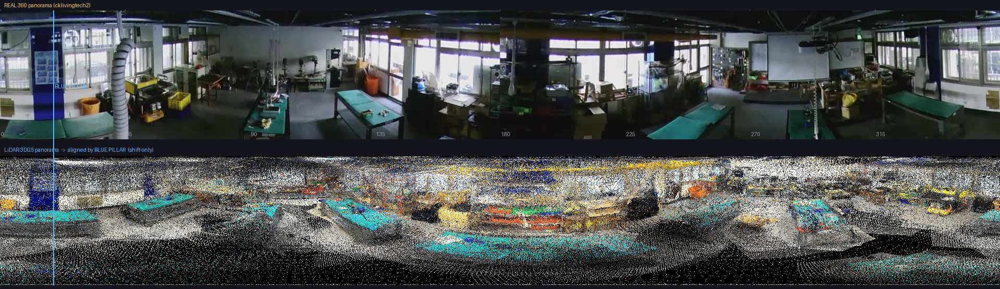
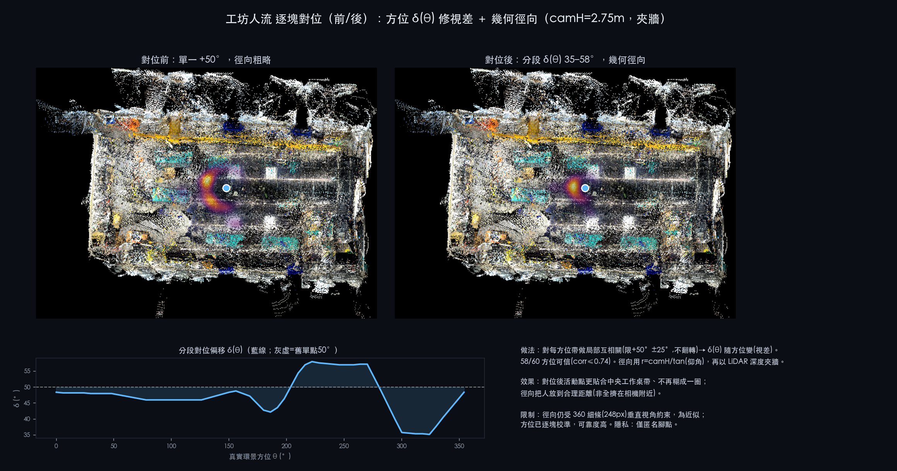
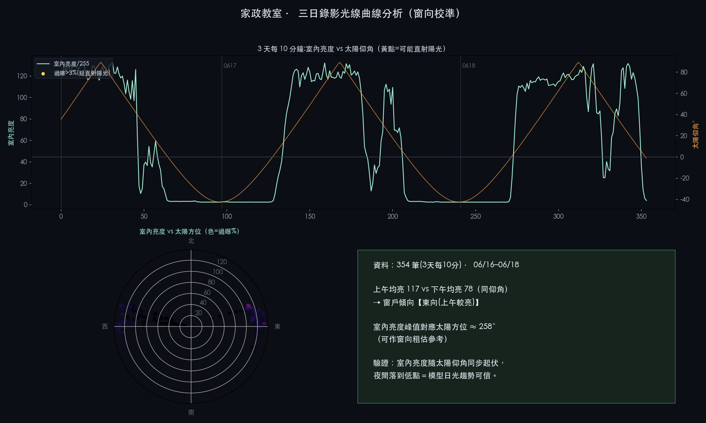
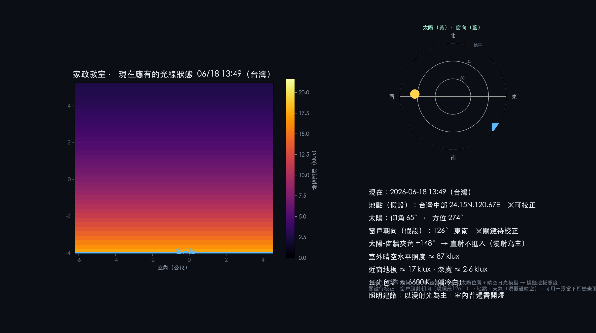

A架構總覽
360° 影片
FlowState 縫合
8K equirect
去全景→6 yaw
+ 去人篩選
SfM 位姿
(SiftGPU)
3DGS 訓練
(wgpu/Metal)
去霧
→ PlayCanvas
瀏覽器 viewer
技術棧：全程 Apple Silicon（M4 Max），無 NVIDIA/CUDA。COLMAP 用 OpenGL SiftGPU、Brush 用 Rust/wgpu(Metal)。輸出走 GitHub Pages 靜態託管。3DGS 為 任意尺度，另用參考物標定公尺。
①②③拍攝 · 縫合 · 去全景去人
X5 拍 360°，Insta360 Studio 用 FlowState 陀螺儀穩定縫合成 8K 等距柱狀（equirect）。再用 ffmpeg v360 把全景投成 6 個 yaw 方向的透視圖（0/60/120/180/240/300°），給 COLMAP 當一般針孔相機照片。
去人篩選（extract_person_aware.py）
拍攝者會入鏡 → 鬼影飄絲，更糟的是抑制 Brush 緻密化（見踩坑①）。用 mediapipe 偵測每張透視圖的人物，bbox 佔比超門檻就丟棄。
| 參數 | 值 | 說明 |
|---|---|---|
area_thresh | 0.05 | 人物 bbox 佔畫面 >5% 即丟該視角 |
| 偵測模型 | efficientdet_lite0 | mediapipe，person 類；全景條另用 5 切片偵測 |
| 實測丟棄率 | 24–26% | 工坊 234/960、家政 192/720 |
④SfM 位姿 — COLMAP（Apple Silicon GPU）
COLMAP 的 SiftGPU 走 OpenGL，在 Mac 可用、比 CPU 快約 25×。注意 4.0.4 後旗標改名。
colmap feature_extractor --database_path db.db --image_path images \ --ImageReader.camera_model PINHOLE --ImageReader.single_camera 1 --FeatureExtraction.use_gpu 1 colmap exhaustive_matcher --database_path db.db --FeatureMatching.use_gpu 1 colmap mapper --database_path db.db --image_path images --output_path sparse # CPU 配對需 --SiftMatching.cpu_brute_force_matcher 1
| 項 | 說明 |
|---|---|
| 相機模型 | PINHOLE + single_camera（同機去全景，內參一致） |
| 碎模型 | mapper 可能分裂成多個 sparse/N → 自動挑註冊張數最多的當 sparse/0 |
| 實測品質 | 家政 522/528 註冊、平均重投影 0.98px（次像素） |
⑤3DGS 訓練 — Brush
Brush 是 Rust/wgpu 跨平台 3DGS 訓練器，在 Apple Silicon 用 Metal。
brush colmap/ --total-steps 20000 --export-every 20000 \
--export-path out/ --export-name "scene_{iter}.ply" \
--max-resolution 1600 --max-splats 2000000
| 參數 | 值 | 說明 |
|---|---|---|
--total-steps | 20000 | 單室內場景足夠 |
--max-resolution | 1600 | 訓練影像長邊上限；拉高更銳但更慢 |
--max-splats | 2,000,000 | 高斯數上限 |
| growth 旗標 | 預設 | --growth-grad-threshold/--growth-select-fraction/--growth-stop-iter/--refine-every。去人資料用預設 growth 即可滿載；激進 growth 反而長針 |
⑥裁切 · 清理 · 去霧
裁切到室內（crop_splat.py）
用 COLMAP 相機軌跡（都在室內）的 5–95% 範圍 + margin 定室內 bbox，砍窗外/遠處離群高斯。margin_xz=2.0、floor_pad=3.0（高度放寬到地板~天花板）。
清飄絲（clean_floaters.py）— 主力
三準則刪「飄浮垃圾」而不碰表面、不變糊：
| 準則 | 參數 | 作用 |
|---|---|---|
| 空間孤立 (kNN) | --knn-pct 95~99.5 | 到第 8 鄰居距離超百分位 → 懸空 floater【主力】 |
| 異常巨大 | --scale-pct 96.5~99.7 | 超大模糊高斯（角落霧） |
| 近乎隱形 | --opacity 0.01~0.06 | 低不透明度霾 |
去針 vs 去霧的取捨
「針狀飄絲」與「銳利表面」用的是同類異向高斯（此場景 61% 高斯 aniso>6）。所以：
| 手法 | 效果 | 結論 |
|---|---|---|
夾異向比 (deneedle) | 去條紋但把表面也弄圓 → 糊 | 夾「最小尺度×K」對針+煎餅都有效，但 K 太小必糊 |
| 天花板剔除 | 天花板變黑空洞 | 過度，棄用 |
| 統計離群清理(clean_floaters 較狠百分位) | 保留密度與銳利、清飄絲 | 最佳平衡 |
極低掠射角的地板條紋是 3DGS 通病（銳利表面靠異向高斯，全削平就糊），後處理無解，需重建層改善。
⑦量測化 — 真實公尺
SfM/3DGS 為任意尺度。用畫面中已知尺寸的參考物反推公尺比例 k。
| 項 | 值 | 說明 |
|---|---|---|
| 參考物 | T8 日光燈管 4ft = 1.22m | 全球標準，天花板亮帶投影量長 |
| 比例 | k = 1.22 / 燈管長(場景單位) | 工坊 k=0.818、家政 k=0.892 m/單位 |
| 產出 | 室內尺寸、家具足跡、建築平面圖 | measure_space.py / build_arch_plan.py |
⑧部署 — 瀏覽器即時 viewer
| 項 | 說明 |
|---|---|
| 壓縮格式 | splat-transform -H 0（去球諧 SH、量化）→ 12–24MB，載入快。實測保留 SH 大 3.8× 但擴散光照下無可見差 |
| 環景 orbit | SuperSplat（PlayCanvas）內嵌；俯視預設角會曝露地板霧 |
| 第一人稱行走 | PlayCanvas 自寫 viewer：WASD+pointer lock、手機搖桿、串流進度條 |
| 座標 | 3DGS 為 COLMAP y-down → splat 繞 Z 轉 180°，世界=(-x,-y,z) |
| 碰撞 | splat_density_collider.py 從高斯密度抽佔據格（voxel 0.15、腿/頭雙層），不經 mesh |
| 常數 | FLOOR_Y(地板)、EYE(眼高)、SPAWN(出生點空格)，依各重建尺度設定 |
floor_override 指定真地板（最大 y 的大平面，up=−y）。⑨室內人流分析（天花板 360 相機）
天花板吊掛 360 相機（j5create），輸出 1920×248 全景條：x=方位角(0–360°)、腳部 y=徑向距離。mediapipe 切片偵測人物。
| 項 | 說明 |
|---|---|
| 偵測 | efficientdet_lite0 + 5 切片(overlap 0.2)，全景條放大後偵測 |
| 取樣 | 58 段全時段(每小時1段×6天)、fps 0.2、共 9,618 偵測 |
| 遠端抽幀 | Pi 端 ffmpeg 抽幀→只傳小 JPEG(12MB vs 影片 150MB)，連奇數時段都拿得到 |
| 呈現 | 人流直接疊回相機自身全景影像＝零投影失真（主視圖） |
| 度量級頂視 | 需 nadir(相機正下方)+方位錨定(投影幕牆)；徑向 r=天花板高÷tan(俯角)；受魚眼解析限制僅參考 |
人流對位進 3DGS — 逐塊對位 + 三座標框註冊
把 360 人流從「相機方位」轉成 3DGS 場景座標，分三步：
1) 方位：分段 δ(θ) 修視差
先以畫面唯一的藍色柱子當錨點——一整排相似綠桌會讓全域互相關產生假對位（曾誤判鏡像+312°），單一藍柱反而一點定方向。再對每方位帶做局部互相關（限 +50°±25°、不翻轉），得隨方位變化的偏移 δ(θ)＝35–58°（±11° 即真實相機與合成中心的視差）。

2) 徑向：幾何反推
r = camH(2.75m) / tan(俯角)，再用 LiDAR 深度夾牆（人不穿牆）。方位可靠、徑向為近似（受 360 細條 1920×248 垂直視角限制）。
3) 三座標框註冊（核心）
| 座標框 | 來源 | 角色 |
|---|---|---|
| LiDAR cloud | RTAB-Map 點雲 | 人流／環景／光線分析所在 |
| splat-local | COLMAP/Brush | viewer = XF · splat（11/10/11-bit 解碼後套 XF） |
| viewer | Sim3 對齊後世界 | 機台座標／走路導覽所在 |

三框打通後，人流投進 viewer 框，做成走路導覽右下角即時人流小地圖（藍點＝你的位置與朝向，按 M 開關；落點誤差 <1px）。
⑩光線世界模型（天文 × 物理 × 攝影機）
用「世界模型」推算教室在任一時刻應有的自然光（地板照度、受光區、方向、色溫）：
| 輸入 | 方法 |
|---|---|
| 幾何 | LiDAR 點雲 PCA 取房間矩形與窗牆（家政 ≈10.8×9.3m、室高 3.23m） |
| 太陽 | 天文公式（赤緯＋時差＋時角）算仰角／方位 |
| 日光 | 晴空照度模型＋日光因子隨進深衰減；太陽落在窗向可受光範圍時加直射陽光斑；估色溫 |
窗向校準（用現成錄影，非即時連線）
攝影機隨身碟 3 天 354 段錄影，逐段抽 1 幀只算光線統計（不傳影像、不辨識人、不落地），配對太陽位置：同一太陽仰角下，上午（東）室內均亮 117 ≫ 下午（西）78 → 窗朝東（≈88°），取代舊假設 126°，模擬從「假設」變「資料校準」。

三方比對 + 回貼 3DGS（relighting）
天文（理論日光）× 天氣（雲量 open-meteo）× 攝影機（室內實測亮度/色溫，僅取數值）三源交叉驗證一致。並把模擬光照回貼到 3DGS：改相機天色背景 + CSS 調色（亮度/色溫/暖暈），做成「3DGS 光線時光機」，拖時間即時改採光（家政／工坊各一）。

★關鍵發現與踩坑彙整
① 去人 → 緻密化滿載（最大發現）
走動拍攝者的視角會產生矛盾梯度，抑制 Brush 緻密化。移除含人視角後，高斯數從 33萬暴增到 192萬、自然清晰，勝過任何訓練參數調整。
② GPU 爭用 → COLMAP 退 CPU
Insta360 Studio / 瀏覽器 WebGL 搶 Metal/GPU，COLMAP SiftGPU(OpenGL) 靜默退 CPU（1100% CPU、慢 60×）。配對期間淨空 GPU。
③ clean_floaters opacity 陷阱
Brush 中位 opacity ~0.05，靠低 alpha 疊色平滑。用 SuperSplat 的 0.2–0.3 門檻會殺 9 成 → 稀疏雜亂。
④ 去霧張力
銳利表面靠異向高斯；夾異向去條紋＝變糊、剔天花板＝變黑、狠刪＝雜亂。最佳＝溫和統計離群清理、保留密度。後處理改不了極掠射角地板條紋（重建層才行）。
⑤ 尺度任意
SfM/3DGS 無絕對尺度。T8 燈管(1.22m)當 proxy；LiDAR 給真實公尺。
⑥ COLMAP 碎模型
mapper 常分裂多 sub-model，務必自動挑註冊最多者當 sparse/0。
⑦ 還原優於過度優化
多輪「更狠去霧」反而越改越糟；全密度的輕清理版最平滑好看。版控保留好版本可隨時還原。
⑧ 對位錨點要選「獨一無二」的特徵
一整排相似綠桌讓全域互相關產生假對位（鏡像+312°）；改用畫面唯一的藍色柱子，一點就定方向。視差用窗口式局部互相關（限幅不翻轉）求出隨方位變化的 δ(θ)。
⑨ 三座標框是跨資料整合的核心障礙
LiDAR cloud（RTAB）、splat-local（COLMAP/Brush）、viewer（Sim3）互不相同。直接套 XF 到 cloud 會錯；正解＝解碼 splat→XF→viewer，再用 PCA 把 cloud 註冊到 viewer（重疊 0.93）。
⑩ 用現成錄影就能校準窗向
不必即時連線相機：3 天錄影逐段抽 1 幀算亮度，配對太陽位置，比較上午（東）vs 下午（西）的室內亮度，即可反推窗戶絕對朝向（≈東 88°）。隱私上只取統計值、不留原圖。